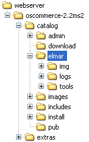

Dies ist die Startseite des Elm@r-Moduls für osCommerce. Mit Hilfe dieses Moduls können Shop- und Produktdaten für verschiedene Internetdienstleister wie Shopverzeichnisse, Produktsuchmaschinen, Preisvergleichsdienste usw. auf einfache Weise gemäß dem offenen shopinfo.xml-Standard bereitgestellt werden. Weitere Informationen finden Sie zum Modul und zum Standard unter http://elektronischer-markt.de/. Nutzen Sie für Fragen und Anregungen bitte auch das Diskussionsforum.
Voraussetzungen
Das Elm@r-Modul nutzt Funktionen, die PHP erst ab Version 4.1 zur Verfügung stellt.
Getestet haben wir unser Modul mit osCommerce 2.2 Milestone 2 unter Linux und Windows mit Apache und Microsoft Internet Information Server.
Bitte entpacken Sie die Installationsdatei im Hauptverzeichnis des Shops; das ist normalerweise das Verzeichnis catalog von osCommerce.
Unter Linux bei tar den Parameter -p angeben, damit die Zugriffsrechte stimmen, z. B.:
tar -xzpvf elmarmodul.tar.gz
Dabei wird das Verzeichnis elmar zum Unterverzeichnis des osCommerce-Verzeichnisses catalog und steht auf der gleichen Ebene im Verzeichnisbaum wie das include-Verzeichnis von osCommerce.
Die Verzeichnisse img, logs und tools liegen im Verzeichnis elmar.
Siehe Bild.

Es sind keine Veränderungen an der osCommerce-Installation notwendig.
Anpassen des Elm@r-Moduls
Sie können das Elm@r-Modul mit zahlreichen Konstanten, die in der Datei elmar_config.inc.php definiert sind, an Besonderheiten Ihres Shops anpassen. Erläuterungen dazu finden Sie direkt in der Konfigurationsdatei.
Zum Ändern der Konfigurationsdatei können Sie diese beispielsweise per FTP vom Webserver auf Ihren Rechner holen und dann lokal mit einem Texteditor bearbeiten. Anschließend speichern Sie die Datei und übertragen Sie wieder zum Webserver.
ACHTUNG: Bearbeiten Sie die Konfigurationsdatei elmar_config.inc.phpnicht mit dem osCommerce-Dateimanager. Aufgrund eines Fehlers im Dateimanager werden sonst alle Backslash-Zeichen entfernt, was unter anderem zu fehlerhaften Produktdateien führt, weil z. B. fälschlicherweise t statt Tabulator ("\t") als Trennzeichen benutzt wird.
Der Fehler im osCommerce-Dateimanager lässt sich beheben, indem in der Datei admin/filemanager.php die Zeile (bei Zeilennummer 148)
Die Startdatei elmar_start.php sollte durch ein Passwort geschützt werden, das in der Datei config.inc.php unter ELMAR_PASSWORD einzutragen ist. Um den Passwortschutz (vorübergehend) auszuschalten, einfach eine leere Zeichenkette eintragen.
define('ELMAR_PASSWORD', '');
Bei Apache-Servern, die PHP als Modul ausführen, läuft die Autorisierung über den Browser, sonst wird ein Cookie benutzt. Über HTTP-Verbindungen (statt HTTPS) ist der Schutz jedoch begrenzt, weil das Passwort unter Umständen mitgelesen werden kann.
Falls der Passwortschutz wider Erwarten nicht funktionieren sollte, besteht ein einfacher Schutz vor unbefugtem Zugriff im Umbenennen von elmar_start.php und dem Verzeichnis elmar. Dabei ist in der Datei elmar_config.inc.php die Konstante ELMAR_PATH entsprechend anzupassen. Wenn das Verzeichnis z. B. in geheim und elmar_start.php in geheim_start.php umbenannt wird, muss die Konstante so gesetzt werden:
define('ELMAR_PATH', 'geheim/');
damit eine URL der Art http://www.example.com/catalog/geheim_start.php?file=index.php die Startseite des Moduls aufruft.
ACHTUNG: Spätere Updates kopieren neue Dateien wieder in das Verzeichnis elmar, sodass die neuen Dateien ggf. von Ihnen in das umbenannte Verzeichnis zu verschieben sind!
Für Apache-Webserver steht darüber hinaus die Datei .htaccess zur Verfügung, welche Zugriffe auf das elmar-Verzeichnis von außen unterbindet.
Über elmar_start.php kann das Webinterface jedoch trotzdem genutzt werden!
Weitere Informationen finden Sie in der Datei access.html.
Unter dem Menüpunkt Update können Sie prüfen, ob eine neuere Version des Moduls verfügbar ist.
Vor der Installation einer neuen Version des Moduls führen Sie bitte zuerst mit dem entsprechenden Menüpunkt ein Backup durch.
Laden Sie dann die neue Version des Moduls von http://projekt.wifo.uni-mannheim.de/elmar/nav/osCommerce.
Anschließend können Sie die Update-Datei auspacken und damit die Dateien der alten Version überschreiben. Sollten Fehler auftreten, war die installierte Version vermutlich zu alt für ein Update, z. B. von Version 2.x auf 3.x. Installieren Sie dann die neue Vollversion und kontrollieren Sie die Einstellungen in den Dateien elmar_config.inc.php sowie config.inc.php.
Abschließend stellen Sie ggf. gesicherte Dateien (insbesondere die Shopdatei shopinfo.xml) wieder her.
Zeigen Sie Preisvergleichsdiensten, Produktsuchmaschinen, Shopping-Portalen usw., dass Sie den shopinfo.xml-Standard unterstützen und diese somit Ihre Shop- und Produktdaten leicht abrufen können. Sie erhöhen damit Ihre Chancen auf eine kostenlose Aufnahme und die Verbreitung Ihrer Angebote. Verlinken Sie dazu Ihre Shopdatei shopinfo.xml z. B. auf der Startseite oder im Impressum (Pfad ggf. anpassen):
<a href="/shopinfo.xml"
title="Wir unterstützen den shopinfo.xml-Standard."
target="_blank"><code>shopinfo.xml</code></a>
Der Link kann auch einfach in die so genannte Info-Box gesetzt werden. Öffnen Sie dazu die osCommerce-Datei catalog/includes/boxes/information.php und ändern Sie die Anweisung, die mit $info_box_contents[] beginnt und mit '); endet:
Gerne dürfen Sie auch unser Logo auf Ihren Seiten einbinden, z. B.:
<a href="http://elektronischer-markt.de/"
target="_blank"><img
src="http://projekt.wifo.uni-mannheim.de/elmar/gfx/elmar-logo-100x50.gif"
width="100" height="50" border="0"
title="Wir unterstützen den shopinfo.xml-Standard und sind bei Elm@r registriert."
alt="Elm@r - shopinfo.xml"></a>
Und so sieht es aus:
(Die Grafikdatei steht auch im Verzeichnis .../elmar/img/elmarlogo.gif.)
<a href="http://elektronischer-markt.de/"
title="Wir unterstützen den shopinfo.xml-Standard und sind bei Elm@r registriert."
target="_blank">Elm@r</a>
Bekannte Probleme und Lösungen
Falls der Server nicht der Schnellste ist, sollte für einen reibungslosen Zugriff auf die Produktdaten unter "Einstellungen" die Option "Produktdatei speichern" aktiviert werden. Es wird dann eine Produktdatei auf die Platte geschrieben und der Zugriff erfolgt anschließend schnell per Umleitung auf diese Datei. Per Voreinstellung wird die Produktdatei automatisch beim Zugriff nach 12 Stunden neu generiert (siehe UPDATEINTERVAL).
Außerdem kann in der Datei elmar_config.inc.php der Wert von DB_SLEEP auf 1 - oder wenn das noch nicht hilft, auf 0 - gesetzt werden:
define('DB_SLEEP', 1);
Wenn safe_mode=On und max_execution_time=30 ist, darf ein PHP-Skript höchstens 30 Sekunden laufen, bevor es abgebrochen wird. Die Erstellung der Produktdatei durch Aufruf von elmar_products.php dauert für Shops mit mehreren Tausend Produkten unter Umständen länger, so dass das Skript vorzeitig abgebrochen wird, wodurch abgeschnittene Produktdateien entstehen, die nicht alle Produkte enthalten.
Unter dem Menüpunkt "Produktdateien" können Sie mit dem Button "Markierte Produktdateien in mehreren Schritten generieren" trotzdem vollständige Produktdateien erzeugen.
Allerdings verfolgen einige Browser wie bspw. Firefox nur eine maximale Anzahl von Weiterleitungen, sodass unter Umständen nicht alle Produkte in die Produktdatei aufgenommen werden. Mit dem Internet Explorer funktioniert es.
(Elm@r kann Ihre Produkte bei Kundenabfragen übrigens auch mithilfe der Echtzeitabfrageschnittstelleelmar_request.php listen, die von dem Timeout-Problem nicht betroffen ist.)
Die osCommerce-Funktion get_browser_language() in der Datei includes/classes/language.php liefert auf dem Microsoft Internet Information Server mit ISAPI-PHP immer die Standardsprache Englisch, wodurch deutsche Produkte u. U. nicht gefunden werden. Dies lässt sich reparieren, indem getenv('HTTP_ACCEPT_LANGUAGE') durch $_SERVER['HTTP_ACCEPT_LANGUAGE'] ersetzt wird. (Dies betrifft osCommerce 2.2 Milestone 2.)
Wenn der Server voll ausgelastet ist, können Fehler der folgenden Art auftreten: mysql_connect(): Too many connections. Unable to connect to database server!
Dieses Problem hat nicht direkt mit diesem Modul zu tun, sondern taucht häufig auf gemeinsam genutzten Servern und/oder bei aktivierten "Persistent Connections" auf (siehe
Artikel im deutschen osCommerce-Forum).
Abhilfe schafft ein Neustart des Servers oder auch einfach nur warten, bis es wieder geht...
Das Modul benutzt die osCommerce-Einstellung zur Berechnung der Versandkosten und der Mehrwertsteuer. Damit das funktioniert, muss der osCommerce-Shop korrekt konfiguriert sein. Insbesondere betrifft dies die folgenden Angaben:
Steuerklassen und -sätze
Display Prices with Tax: true für Preise inkl. Mehrwertsteuer (sonst in Produktdateien ohne MwSt.)
Enable Flat Shipping: True; Shipping Cost: 5.00 für eine Versandkostenpauschale von bspw. 5 EUR
Allow Free Shipping: true; Free Shipping For Orders Over: 50 für Versandkostenfreiheit ab bspw. 50 EUR
Weil auf vielen Webservern PHPs open_basedir gesetzt ist, können die Dateien, die zum Webinterface des Moduls gehören, nicht direkt aufgerufen werden. Stattdessen ist elmar_start.php?file=... zu benutzen, wobei für ... der Name des Skripts einzusetzen ist, z. B. index.php.
Für Kelkoo sollte ein Wert für
define('VERSANDKOSTEN_AB', '');
in der Datei elmar_config.inc.php eingetragen werden, damit das Feld nicht leer bleibt.
Beim Abruf von Produktdateien sendet das Elm@r-Modul TXT- oder CSV-Dateien, für die der Browser in der Regel ein Dialogfenster zum "Speichern unter" öffnet (siehe Bild). Wenn der Internet Explorer die Dateien stattdessen anzeigt, kann man unter "Extras - Internetoptionen - Sicherheit - Stufe anpassen - Verschiedenes" die Option "Dateien basierend auf dem Inhalt und nicht der Dateierweiterung öffnen" deaktivieren (siehe Bild).
Was beim Öffnen von Dateien passieren soll, kann man z. B. im Explorer unter "Extras - Ordneroptionen - Dateitypen" einstellen. Dort sollte die Option "Öffnen nach dem Download bestätigen" aktiviert sein (siehe Bild).
Das Skript elmar_request.php beantwortet Echtzeitsuchanfragen, die hauptsächlich von Nutzern bei Elm@r kommen. Sofern aktiviert, kann man im Menü unter Protokolle -> Echtzeitanfragen sehen, wonach potenzielle Kunden suchen. Ruft man das Skript elmar_request.php einfach so auf, erscheint ein XML-Dokument mit einer Fehlermeldung, weil Suchbegriffe fehlen. Um die Echtzeitsuche zu testen, steht im Webinterface der Menüpunkt Test 2 zur Verfügung. Echtzeitabfragen lassen sich unterbinden, indem der OnlineRequest-Block in der Shopdatei shopinfo.xml entfernt wird.
Das Elm@r-Modul benötigt Schreibrechte für die folgenden Dateien.
Schreibrechte können meist mit FTP-Programmen erteilt oder unter Linux bspw. mit dem Befehl
chmod 666 [Dateiname] bzw. chmod a+rw [Dateiname] eingestellt werden (siehe elmar/writeaccess.sh).
Datei
Erläuterung
catalog/shopinfo.xml
Die Shopdatei, in welche shopspezifische Daten geschrieben werden. Diese Datei kann auch im Stammverzeichnis des Webservers stehen, sodass sie unter einer URL der Art http://www.example.com/shopinfo.xml erreichbar ist.
catalog/products.csv
In die Produktdatei werden Produkt- und Preisinformationen geschrieben, damit diese zum Download bereitstehen. Die Generierung erfolgt automatisch durch elmar_products.php. Außerdem können weitere Produktdateien kelkoo.txt, pangora.txt usw. für Kelkoo, Pangora usw. angelegt werden.
catalog/elmar/config.inc.php
Enthält Einstellungen für das Elm@r-Modul; Anpassung mittels elmar/setup.php
catalog/elmar/logs/error.html
Protokollierung von Fehlermeldungen.
catalog/elmar/logs/error.log
catalog/elmar/logs/products.html
Protokollierung von Produktdateianfragen.
catalog/elmar/logs/products.log
catalog/elmar/logs/request.html
Protokollierung von Echtzeitanfragen nach Produkten.
Die meisten Dateien des Elm@r-Moduls landen im Verzeichnis elmar bzw. dessen Unterverzeichnissen.
Des Weiteren werden fünf Dateien, deren Namen jeweils mit elmar beginnen, im catalog-Verzeichnis abgelegt.
Außerdem können noch die Dateien shopinfo.xml (Shopdatei), products.csv (Produktdatei) und weitere Produktdateien kelkoo.txt, pangora.txt usw. erzeugt werden.
Im Verzeichnis elmar befinden sich die Dateien uninstall.bat für Windows und uninstall.sh für Unix-Systeme (vor dem Aufruf ggf. Ausführungsrechte setzen: chmod u+x uninstall.sh). Damit lassen sich alle Dateien des Elm@r-Moduls löschen. Weitere Maßnahmen sind zur Deinstallation nicht notwendig, weil das Elm@r-Modul keine Veränderungen an der osCommerce-Installation vornimmt.
Das Elm@r-Modul wird Ihnen von uns kostenlos zur Verfügung gestellt.
Wie bei kostenloser Software üblich, erfolgt die Benutzung auf eigene Gefahr.
Es ist zwar unwahrscheinlich, dass durch das Modul Schäden entstehen,
aber sicherheitshalber distanzieren wir uns von allen eventuellen Schäden, die durch die Benutzung des Moduls entstehen könnten.
Wenn Sie damit nicht einverstanden sind, sollen Sie das Modul nicht einsetzen.